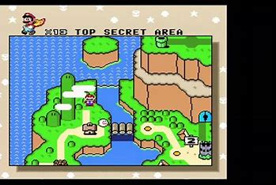
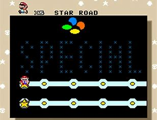
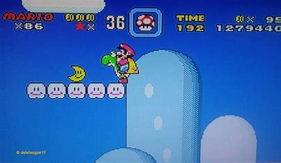
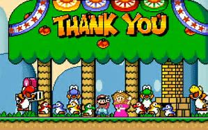

Easter Eggs in Super Mario World
5 hidden areas and secrets in the game
1. The Secret Yoshis
In Super Mario World, players first meet the iconic green Yoshi, but the game hides even more powerful versions. Scattered across Star World, secret baby Yoshis in red, blue, and yellow can be found. Unlike regular Yoshis, these colorful variants gain unique abilities when they eat a shell—blue Yoshis can fly, red Yoshis spit fire, and yellow Yoshis create ground-quaking shockwaves. These hidden Yoshis give players a major advantage, but only those who explore Star World can unlock their full potential.
2. The Fake Special World Message
If players conquer the ultra-challenging Special World, the game rewards them with a surprise—a seasonal makeover. The entire overworld map shifts from a bright green summer landscape to an autumn-themed world with orange and brown tones. But that’s not all! Many enemies also change appearance, with some wearing Mario masks as a playful nod to the player’s accomplishment. This fun visual Easter egg makes the world feel even more dynamic for those skilled enough to unlock it.
3. The Hidden "Top Secret Area"
Most levels in Super Mario World require effort to gather power-ups, but there’s one completely hidden stage designed as a restock station—Top Secret Area. Located behind the Donut Ghost House, this secret room contains no enemies, just power-ups: Fire Flowers, Cape Feathers, and even a Yoshi. Players can enter the level repeatedly to gear up before taking on tougher challenges, making it one of the game’s most valuable hidden locations.
4. The Mysterious Moon Coins
Extra lives are crucial in Super Mario World, but 3-Up Moons are extremely rare and hidden throughout the game. Unlike regular 1-Up Mushrooms, these crescent-shaped collectibles grant three extra lives at once, making them one of the most rewarding secrets. Players can find them in hard-to-reach areas, encouraging exploration and precise platforming skills. Since they don’t respawn after collection, finding one feels like a true achievement.
5. The Hidden Developer Thank You Message
Although not accessible in normal gameplay, a hidden developer message was found deep within Super Mario World's code. This secret text, uncovered by data miners years after the game’s release, contains a heartfelt thank-you from the developers to the playtesters and staff who worked on the game. While it never appears on screen, its discovery provides a fascinating glimpse into game development history. It’s a reminder that behind every classic game, there’s a team of passionate creators who bring it to life.